Every pixel from the dual grid and the occupancy — no Gaussian is rendered anywhere on this page
The paper's pipeline stores appearance on a two-level cube lattice and draws it through the 3D Gaussian rasteriser: the cells are splatted. This page is a separate build in which nothing is splatted. The object is an O‑Voxel dual grid and a per-cell interior field, the cut face is the closed-form polygon of a plane against the occupancy, and both go into one nvdiffrast pass. It answers a question the paper cannot: what does this object look like when the representation is carried all the way through, rather than converted at the surface and splatted underneath?
code/ovoxel_native/, trained separately. The paper's
tables are unaffected by anything here, and where the two disagree the paper's numbers are the ones
that were produced by the pipeline it describes.
Every arm below is the same program with one thing changed. All fourteen runs in the table were configured in one file and launched together, because the alternative — comparing two runs whose settings were recorded nowhere — produced a 17% improvement that turned out to be 2.1% when the control was run properly.
| object | pixel loss alone | + critic on the unphotographed planes | verdict | ||
|---|---|---|---|---|---|
| transverse | longitudinal | transverse | longitudinal | ||
| loaf | 0.4721 | 0.4806 | 0.4306 | 0.4414 | better, 8.8% / 8.2% |
| orange | 0.1113 | 0.2035 | 0.1090 | 0.2008 | better, 2.1% / 1.3% |
| apple | 0.3133 | 0.3404 | 0.3071 | 0.3576 | split |
| pomegranate | 0.3028 | 0.4243 | 0.3033 | 0.4275 | worse, slightly |
| cake | 0.5459 | 0.5846 | 0.5532 | 0.5853 | worse, slightly |
| watermelon | 0.1682 | 0.2238 | 0.1780 | 0.2427 | worse, 5.8% / 8.4% |
| doughnut | one photograph per family, so it has no held-out split and cannot be scored | — | |||
Two objects improve, three are worse, one is split. The transverse mean moves from 0.3189 to 0.3135, 1.7%, and almost all of that is the loaf: remove it and the mean goes the other way. The honest statement is that a critic on the planes no photograph corresponds to helps one object a great deal, hurts another, and does nothing measurable to the rest — not that it is the method.
What the critic is, and why it was expected to work, is in the experiments. The mechanism is sound and the measurement does not support it as a default, which is the same shape as the other single-object results this project has had to withdraw.
The photographs lie on two lines through the space of planes: a transverse plane is a fixed normal at a varying depth, a longitudinal one is a varying azimuth about the axis at a fixed depth. Measured, the fixed 26 of them reach 39–59% of an object's cells and that is a ceiling. Drawing the planes instead accumulates — and drawing them by a formula accumulates faster than drawing them at random.
The schedule is deterministic. At step k, with each family keeping its own counter,
depth = d0 + (d1 - d0) * frac( radical_inverse_2(k_h) + phi * floor(k_h / P) ) azimuth = pi * frac( k_v * phi + phi^2 * floor(k_v / P) )
— a radical inverse for the depth, the golden angle for the azimuth, and a shift every P steps. Every prefix of that sequence is spread rather than spread on average, so "one pass covers most of the space" holds by construction; the shift is there because a formula that guarantees even coverage in one pass also guarantees it repeats itself in the next.
| planes | the fixed 26 | drawn at random | from the formula | a spiral over all orientations |
|---|---|---|---|---|
| 26 | 54.6% | 48.7% | 36.1% | 28.4% |
| 50 | — | 64.4% | 59.9% | 46.2% |
| 100 | — | 84.6% | 82.4% | 70.0% |
| 200 | — | 92.5% | 94.7% | 91.3% |
| 400 | — | 98.0% | 95.2% | 99.1% |
Coverage alone does not decide it: the formula leads at 200 planes and saturates by 400, random keeps finding corners, and a spiral over all orientations wins in the end but starts far behind, because an arbitrary plane usually clips a small piece of the object where a family plane cuts through its middle. What decides it is what the schedule does to a solve:
| the orange, same budget | error on photographed planes | gradient on depths nobody photographed |
|---|---|---|
| planes drawn at random | 0.0559 | 258% of the photographs' |
| planes from the formula | 0.0548 | 231% |
2.0% on the error, and the excess texture — the grain a solve leaves where cells are touched unevenly — falls by 27 points. It is the only change measured on this page that moved both at once; more steps, a decayed learning rate and a wavelet critic all moved neither.
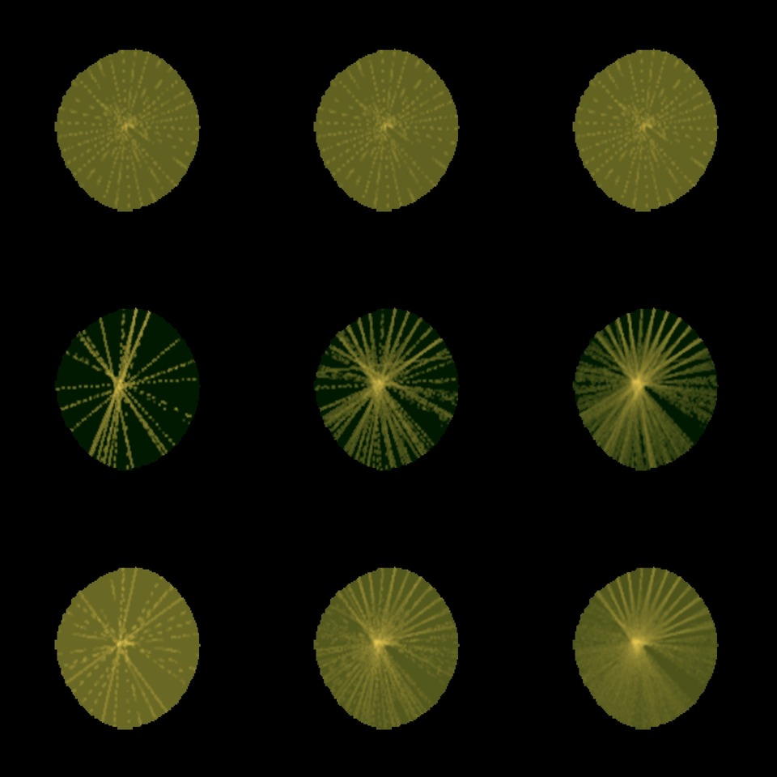
| cells that receive any gradient | 26 planes | 100 | 400 | most times one cell is touched, at 400 |
|---|---|---|---|---|
| the fixed schedule | 32.2% | 32.2% | 32.2% | 167 |
| drawn at random | 32.6% | 77.9% | 95.6% | 92 |
| from the formula | 35.5% | 85.6% | 98.3% | 88 |
The first row is the same picture three times: a fixed schedule spends four hundred planes re-crossing the third of the object it can reach, touching some cells 167 times while two thirds are never touched at all. The formula's advantage over independent draws is visible as evenness rather than as extent — at 26 planes its lines are regularly spaced where the random ones clump, and at 400 its busiest cell has been touched 88 times against 92 and 167. That flatness is what shows up in the solve.
These percentages are lower than the ones above — 32.2% here against 54.6% — because they are measured differently, and the stricter measurement is this one: a plane is counted as touching a cell only if a gradient actually reaches it, which visibility through the rendered cut face can prevent. The earlier figure counts the cells a plane passes through geometrically.
Three constructions were got wrong on the way and are recorded in
reachrand.py so they are not repeated: a spherical Fibonacci sequence ordered by
k/N puts its whole prefix at one pole (its first 26 planes reached 0.8% of the interior);
an offset must be stratified within the object's own extent along that normal, or most planes miss
it; and two interleaved families must not share one counter, because a strided subsequence of a
low-discrepancy sequence is not itself low-discrepancy — fixing that took the 100-plane
coverage from 47.6% to 82.4%.
One program, seven objects, no per-object setting anywhere in it. What follows is every step from a released Gaussian model to a cuttable object, then the seven objects it produces, then the experiments that decided each step — including the ones that decided a step should not be taken.
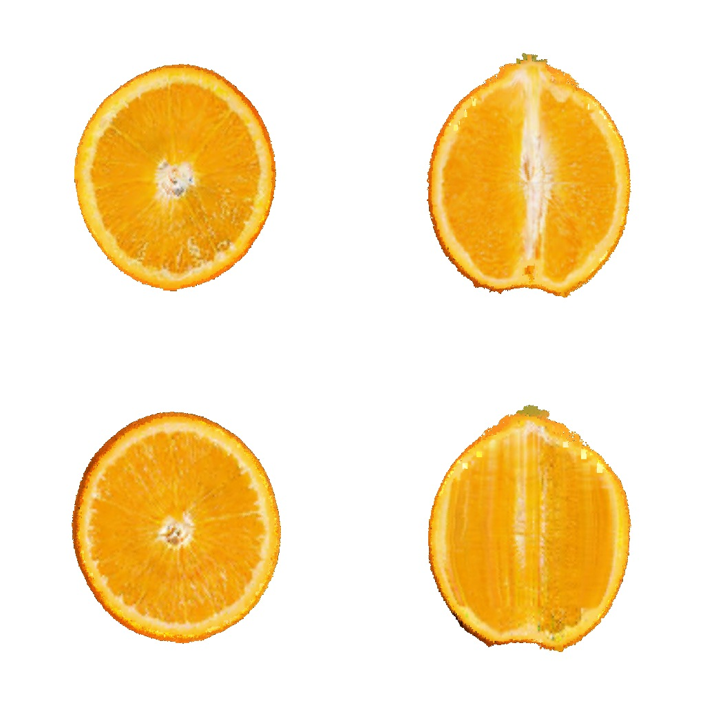
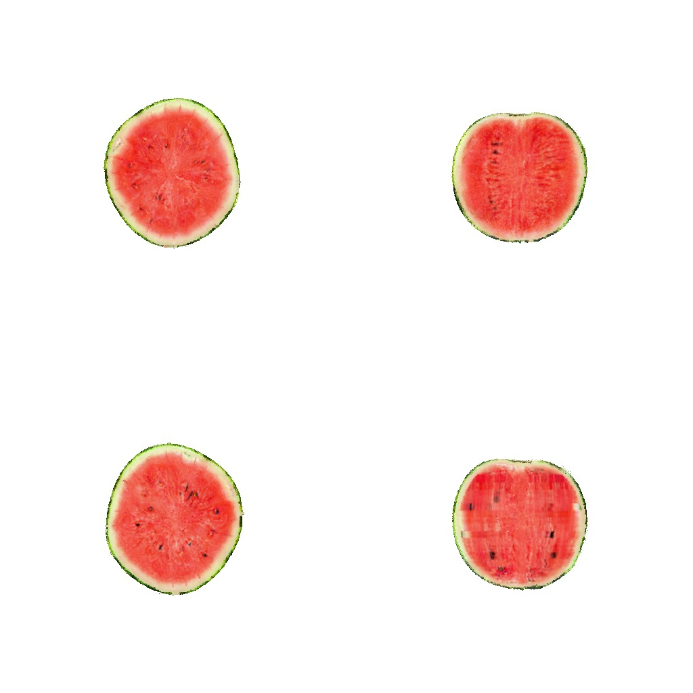
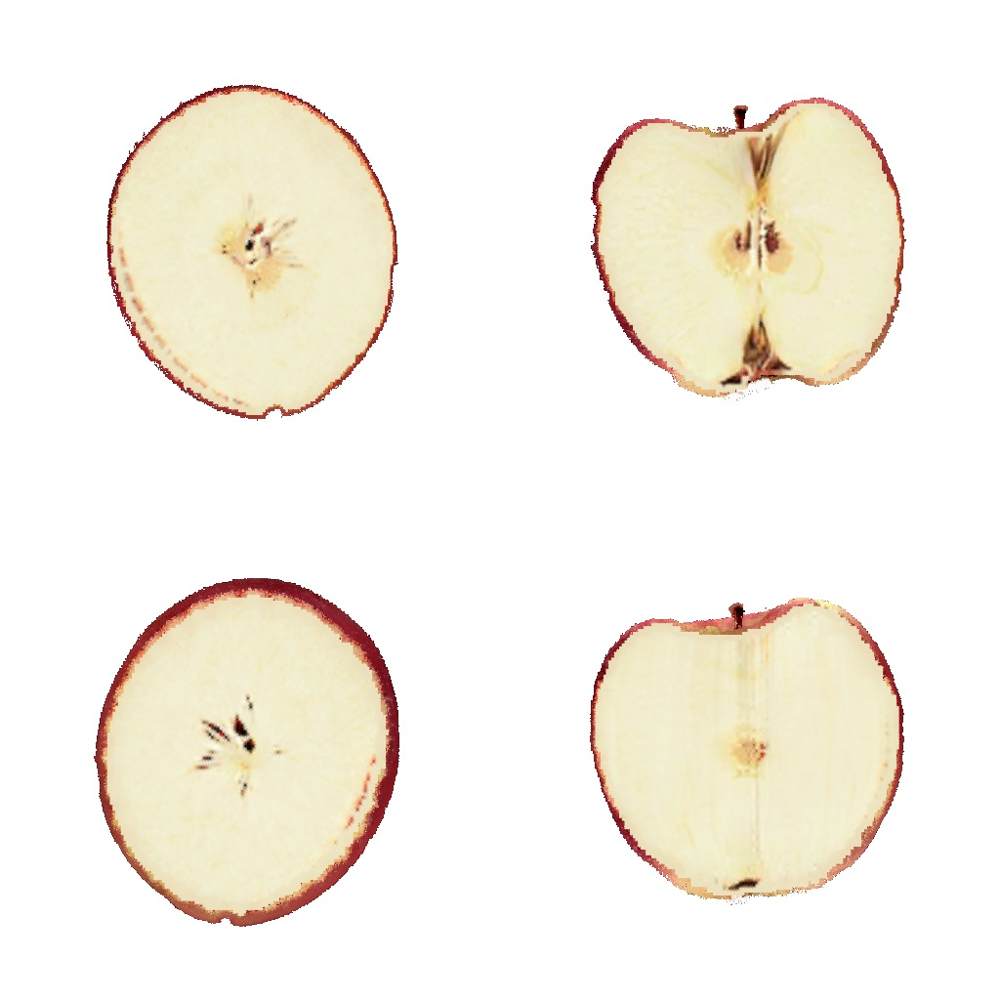
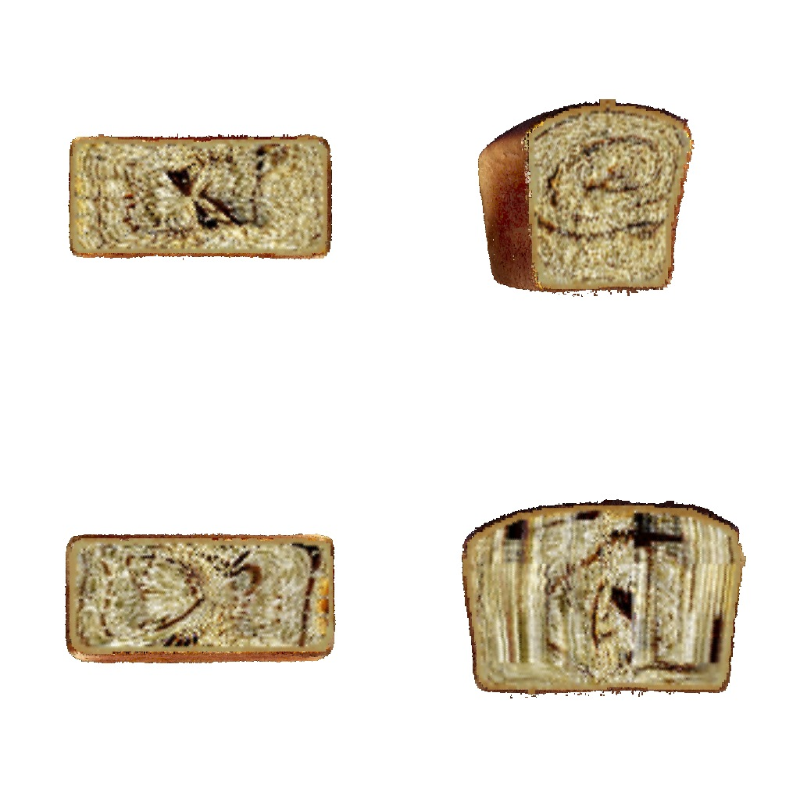
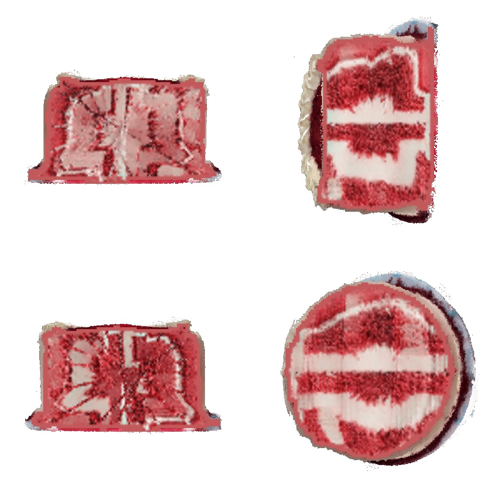
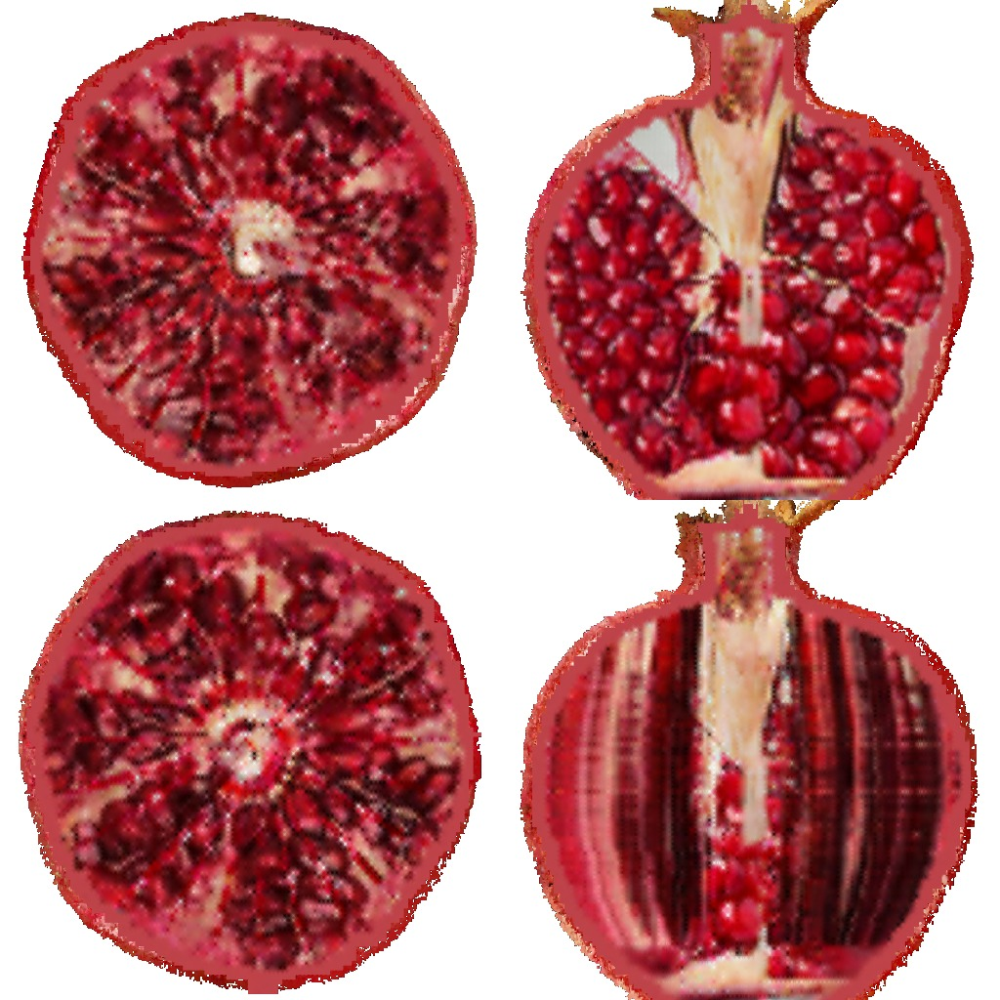
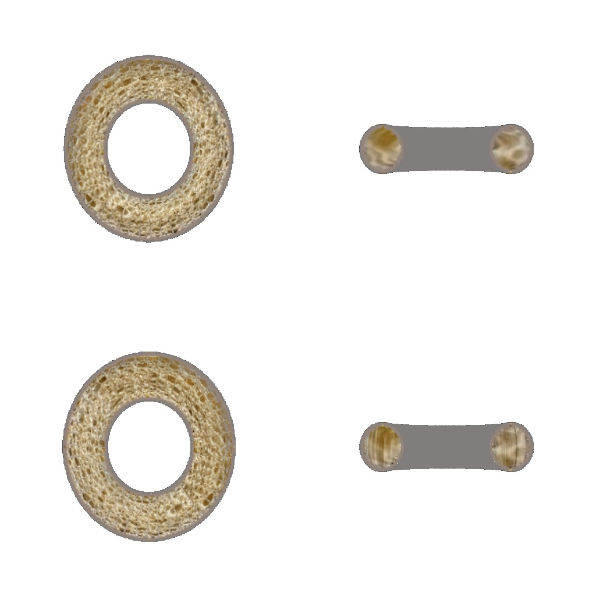
All seven under the pipeline as it stands: the shape-derived split, the anisotropic field prior, and the target drawn from the two photographs either side of the depth rather than averaged. Their numbers are the "+sampled" columns below.
A released 3D‑Gaussian model is quantised onto a two-level cube lattice,
\(h_c = L/125\) with the shell at \(h_c/2\). The dual grid and the occupancy come from that and
are fixed for the run. Six exterior views paint the skin before training starts;
SHELL_PIN=1 then freezes it, so the cut faces can never repaint the rind they are seen
through, and SEC_SKIP_OUTER=0.10 keeps the section loss off the outermost tenth of each
render from the other side. The sections own the interior, the six exterior views own the
skin.
A transverse plane moves along the polar axis; a longitudinal plane turns about it. Resolving both at the same spacing takes planes in the ratio of the axis extent to half the circumference, so with the total held at 26 for every object:
N_H = clip(round(26 * L / (L + pi * r)), 2, 24) # mvcams.py N_V = 26 - N_H
\(L\) and \(r\) are measured from the object's own coarse cells, with the level‑1 skin rows excluded — they are half the spacing and all of them at the rim, and averaging over them pulls the radius up 13% and moves the split by a whole plane. This gives the counts under the videos above: 14/12 for the orange, 4/22 for the doughnut, and nothing is chosen by hand. The derivation is set out in full below, including two constants in it that are wrong and what happens when they are corrected.
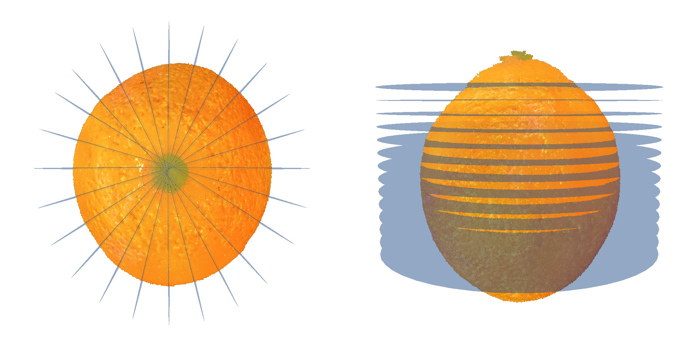
One transverse plane, one longitudinal plane and one exterior view together, so a cell both families cross meets both constraints in the same backward pass rather than alternately. Each family's loss is scaled by its plane count over the number of groups, which keeps its total weight per outer iteration equal to its plane count. Before the plane is drawn it is moved: a transverse depth is offset by up to half a step, so over a run it sweeps the cells between the supervised depths instead of re-cutting the same ones.
The transverse photographs are ordered by depth and there are two to twelve of them for fourteen or so planes, so a plane sits between two of them. The assignment used to be integer division — planes 1 to 4 get one photograph, 5 to 8 the next — and each switch drew a line across the polar axis that every longitudinal cut crossed. That was replaced by a continuous blend: the two photographs either side of the depth, brought onto a common disc and mixed at the fractional part. The banding went away.
An average of two sections of two different oranges is a picture neither of them is, and averaging removes structure by construction. Measured against the raw photographs, the blended target keeps 86% of their gradient on the orange, 90% on the watermelon, 97% on the apple — structure the loss can never ask for, because it is not in the target.
REF_SAMPLE=1 draws one of the two instead, with probability equal to the mixing
weight. The expectation is the blend, so the depth assignment is unchanged in the mean and the
banding stays away; what changes is that the target on any step is a photograph rather than an
average of two. A plane sees both over a run, in the right proportions — it is the difference
between fitting a mean and fitting samples from a distribution with that mean. The variance it adds
is what the field prior absorbs.
The exterior triangles behind the plane and the cut polygon of the plane against the occupancy go
into one nvdiffrast pass, so the depth test composes them. Then — and this is the step most
easily stated wrongly — the loss is not the render against the photograph.
section_target takes both and returns a third image: the foreground comes from the
rasteriser's accumulated opacity rather than from "differs from white", the target is initialised as
a copy of the render rather than as white, and each connected component is matched to the reference
by hole count and then by coordinates. The photograph supplies appearance as a function of position
within the section; the render supplies the silhouette.
L = sum over this step's planes of w_family * | render - target |
+ 0.1 * mean over sampled face-sharing cell pairs of (c_a - c_b)^2,
weighted 4x on the two lattice axes perpendicular to the polar axis
Mean absolute error per plane, and one prior. The prior is the only term beyond the pixel loss that this pipeline turns on, and both its weight and its direction were measured rather than assumed:
| tensor | what it is | learning rate | constraint |
|---|---|---|---|
interior | an 8-d latent per solid cell through a shared two-stage MLP | feat 0.005, MLP 0.002 | clamped to [0,1] |
surf_rgb | one RGB per dual vertex — the skin | 0.02 | frozen |
dual_v, split_w | the dual grid's offsets and split weights | 1e‑3 | split weights in (0,1) |
Adam, no schedule — a schedule was tried and made it worse, twice. 325 outer iterations, which is 4,225 to 7,475 gradient steps depending on the split.
Twelve planes per object are held out. Six are validation and the probe reads only those; six are test and are not looked at until the run is over. Before this split the probe and the reported score were the same planes, so every "this arm stopped improving" was read off the set the arm was then scored against. Every number in the next section is on the test half.
The same program on all seven, with its own control on each: the identical run with the prior switched off. DreamSim against each object's own photographs, on the test half.
| object | split | photos h / v |
transverse | longitudinal | no gradient | |||||
|---|---|---|---|---|---|---|---|---|---|---|
| plain | +prior | +sampled | plain | +prior | +sampled | plain | +prior | |||
| cake | 15/11 | 2 / 2 | 0.4560 | 0.4560 | 0.3692 | 0.4796 | 0.4853 | 0.4223 | 6,781 | 1 |
| pomegranate | 14/12 | 2 / 2 | 0.2488 | 0.2543 | 0.2046 | 0.4864 | 0.4878 | 0.4263 | 21,491 | 0 |
| loaf | 11/15 | 3 / 3 | 0.3965 | 0.3884 | 0.3691 | 0.4553 | 0.4415 | 0.4167 | 37,387 | 0 |
| orange | 14/12 | 3 / 3 | 0.0796 | 0.0781 | 0.0736 | 0.2049 | 0.1923 | 0.2018 | 36,977 | 1 |
| watermelon | 13/13 | 10 / 12 | 0.1638 | 0.1651 | 0.1594 | 0.2052 | 0.2008 | 0.1910 | 40,524 | 0 |
| apple | 14/12 | 2 / 2 | 0.2513 | 0.2501 | 0.2631 | 0.3389 | 0.3318 | 0.3493 | 41,939 | 0 |
| doughnut | 4/22 | 1 / 1 | 0.1532 | 0.1531 | 0.1546 | 0.5334 | 0.5367 | 0.5378 | 27,986 | 0 |
Sorted by how many photographs each object has, because that turns out to order the result. Drawing a photograph instead of averaging two improves five objects of seven, and by several times what the prior manages — the cake by 19.0% on the transverse column and 11.9% on the longitudinal, the pomegranate by 17.8% and 12.4%, on both of which the prior had done nothing at all. The doughnut is the control nobody arranged: it has one photograph per family, so there is nothing to draw, and its numbers move by 0.001. That the effect vanishes exactly where the mechanism cannot operate is the best evidence that it is the mechanism.
Two objects are worse, the apple and the doughnut, and the apple is not explained by photograph count — it has two, like the cake and the pomegranate, which gain most. The orange gains 7.5% on the transverse column and loses 4.9% on the longitudinal. So this is not uniform either, and the claim is five of seven rather than all of them.
Drawing rather than averaging is two changes at once: the target stops being a mean, and it becomes random. They can be separated by drawing from the whole family instead of from the two photographs either side of the depth — same randomness, no depth assignment at all. That is only a different experiment where a family has more than two photographs, which is the watermelon with ten and twelve, and the orange and the loaf with three each.
| object | photos | transverse | longitudinal | ||||
|---|---|---|---|---|---|---|---|
| averaged | drawn from two | drawn from all | averaged | drawn from two | drawn from all | ||
| watermelon | 10 / 12 | 0.1651 | 0.1594 | 0.1968 | 0.2008 | 0.1910 | 0.2865 |
| orange | 3 / 3 | 0.0781 | 0.0736 | 0.0799 | 0.1923 | 0.2018 | 0.2051 |
| loaf | 3 / 3 | 0.3884 | 0.3691 | 0.3977 | 0.4415 | 0.4167 | 0.4526 |
Drawing from the whole family is worse than both on every object and in every column, and worst where it differs most: the watermelon has the most photographs, so its uniform draw is furthest from its neighbour draw, and its longitudinal column degrades 50%. So the two halves come apart cleanly. Not averaging is what works; randomness on its own has no value, and spending it on the depth assignment destroys information the ordering carries.
So the honest claim for this term is not that it reconstructs better. It is that it removes unconstrained cells, and that claim is supported seven times out of seven. The price is also consistent: the field carries 5–21% less structure between neighbouring cells on every object.
Three tensors are the model, and nothing else is. Two more are fixed and come from the occupancy.
| tensor | shape | what it is | trained |
|---|---|---|---|
dual_v | \((N_s, 3)\) | where the surface sits inside each active fine voxel | pinned here |
split_w | \((N_s, 1)\) | how each dual quad is split into two triangles | pinned here |
surf_rgb | \((N_s, 3)\) | the exterior's colour, one per dual vertex | pinned here |
interior | \((N_c, 3)\) | the volumetric appearance, one colour per solid coarse cell | yes |
coords, inter | \((N_s, 3)\) | which fine voxels are active and which of their edges the surface crosses | fixed |
solid, idx3 | \((N_c, 3)\) | the occupancy after closing and filling, and its index | fixed |
interior is the part TRELLIS.2's own container does not carry, because
mesh_to_flexible_dual_grid only ever returns boundary voxels — a dual grid is a
surface, and a cuttable object needs a volume. It is not stored as colours: each cell holds an
8‑dimensional latent and a shared two-stage decoder produces the colour, which is the paper's
anchor decoder applied to this container. The exterior gets a second decoder of its own, so the two
populations cannot leak into each other.
Everything on this page is trained with the exterior pinned, which is the pipeline's own setting: the shape and the skin come from the released model and only the interior beneath them learns. What that leaves free is between 3.2 and 6.2 million floats depending on the object.
The three steps that are not obvious are worth stating plainly.
The occupancy is built once and never moves. The coarse cells that hold a primitive are closed and filled, so the volume is a solid rather than a shell, and the dual grid is extracted from the boundary of that solid at the fine spacing. Connectivity therefore comes from the occupancy and not from where any vertex sits, which is what lets the cut stay closed form.
The cut is a formula, not a mesh operation. A plane meets a cube in a convex polygon whose vertices are the crossings of its twelve edges, so the exposed face of a cut is the union of one polygon per crossed cell, computed directly. Each vertex takes its colour by trilinear interpolation of the interior field at its own position — not at the cell centre, which for a face passing near a material boundary would fall on the wrong side of it.
Both surfaces go into one pass. The exterior mesh is filtered to the half the plane keeps, the cut polygons are appended, and the two are rasterised together, so the depth test composes them and nothing has to be blended between two renderers. That is the whole reason the exterior was converted rather than left as Gaussians: a splatted shell covers only 7 to 20% of the frame at \(\alpha\) above one half, so at the silhouette a cut face shows through from the side it should be hidden on.
Each video is one object, cut twice. On the left a plane perpendicular to the polar axis walks down it; on the right a plane containing the axis walks across. Nothing is composited: what changes between frames is one number, the plane's offset.
The two families differ in more than orientation. The transverse planes are a stack: they are parallel, ordered along the polar axis, and the photographs that supervise them are ordered the same way, so which photograph belongs at which depth is a question with an answer. The longitudinal planes are a fan: they all contain the axis and differ by azimuth, so they all cut the same material and any of them could be compared against any photograph.
That difference has a consequence which is visible rather than theoretical. A transverse cut crosses no depth boundary — it is one depth — while a longitudinal cut crosses every one of them, so anything that varies discontinuously with depth appears as a band across the longitudinal face and not at all on the transverse one. Which is what was found, and fixed.
One line of code decides how many planes each family gets, and it is the change with the most at stake on this page. Every step of it is here with the measured number at each stage, for all seven objects, including the two constants that are in the equation because leaving them out was wrong and the three things it still does not fix.
Every solid cell centre is projected onto the polar axis \(\hat n\), which is the transverse family's own normal. Two numbers come out, both in coarse cells so they are comparable with the lattice itself:
Two corrections to this measurement, both of which moved objects by whole planes.
The skin rows come out. gs_fill.ply carries the coarse cells and the
level‑1 skin in the same rows, and the skin is half the spacing and all of it at the rim:
480,287 of the orange's 1,162,387 rows. Averaging over all of them pulls the radius up 13%. What the
sampling has to cover is the interior, so cell_level.pt is read alongside and the
level‑1 rows are dropped.
The rim, not the mean. The rule balances the arc between neighbouring
longitudinal planes against the transverse spacing, and the structure that has to be resolved
— segment walls, seeds, crumb — sits at the rim, not at the average distance from the
axis. Measured here the rim is 1.5 to 1.9 times the mean, so with the mean the arc where it matters
was 11.8 to 15.0 cells while the rule believed it was arranging 6.8 to 9.2. The 90th percentile
rather than the maximum, so that one stray cell cannot set the scale
(N_PLANES_RIM_PCT=90).
A transverse plane moves along the axis; a longitudinal plane turns about it. To resolve both at the same spacing the two arcs must be divided the same way. Half a circumference and not a whole one, because a plane and its opposite normal are the same cut.
The step that was wrong for a long time is which transverse spacing goes into that equation. The
depths are not \(N_h\) samples across the axis: mvcams asks
interpolate_along_camera_direction for \(M = \lceil 1.5\,N_h \rceil\) of them and
supervises the middle \(N_h\), so the spacing in force is \(L/M\). Balancing \(L/N_h\) against
\(\pi R/N_v\) therefore solved for a spacing the code never produces, and every object came out
1.29 to 1.59 times finer on the transverse side than the balance it had just solved — the rule
over-supervised precisely the family it was written to stop over-supervising. Putting the constant
into the equation is the whole of the fix:
solve L / (OVER * N_h) = pi * R / N_v with N_h + N_v = TOTAL N_H = clip(round(TOTAL * L / (L + OVER * pi * R)), 2, TOTAL - 2) # mvcams.py N_V = TOTAL - N_H TOTAL = 26 N_PLANES_TOTAL the budget, unchanged for every object OVER = 1.5 N_PLANES_OVER the ceil(1.5 * N_h) the sampler lays down R = p90 radius N_PLANES_RIM_PCT the rim, not the mean
| object | \(L\) | mean \(r\) | rim \(R\) | split | \(M\) | transverse \(L/M\) | rim arc \(\pi R/N_v\) |
|---|---|---|---|---|---|---|---|
| orange | 126 | 33.1 | 49.9 | 9/17 | 14 | 9.00 | 9.23 |
| watermelon | 103 | 33.8 | 50.6 | 8/18 | 12 | 8.56 | 8.82 |
| apple | 121 | 33.2 | 50.3 | 9/17 | 14 | 8.64 | 9.29 |
| loaf | 80 | 32.4 | 53.4 | 6/20 | 9 | 8.89 | 8.39 |
| cake | 110 | 26.6 | 42.3 | 9/17 | 14 | 7.86 | 7.82 |
| pomegranate | 115 | 29.1 | 44.2 | 9/17 | 14 | 8.21 | 8.17 |
| doughnut | 43 | 64.6 | 78.1 | 3/23 | 5 | 8.60 | 10.67 |
The last two columns are the test: they are the two spacings the rule exists to equalise, and they now agree within 10% on six of the seven. The orange was 6.00 against 14.46 before these constants went in and is 9.00 against 9.23 after. The doughnut is the exception at 8.60 against 10.67 — it is the roundest object here and 3/23 is where the clip at \(N_h \ge 2\) stops it, so 26 planes are not enough to balance something that flat.
Two consequences, neither of them obvious from the equation, and both needed to read the results honestly.
The split is a reallocation of gradient weight, one unit for one unit. Each family contributes one plane per step at weight \(|\text{family}|/G\) with \(G = \max(N_h, N_v)\), over \(G\) steps, so its total weight over an outer iteration is exactly its plane count. Moving the orange from 16/10 to 9/17 removes 44% of the transverse family's weight and adds 70% to the longitudinal one. Nothing else in the objective changes.
The split also changes the number of gradient steps. An outer iteration is \(G\) steps, so at the same 325 outer iterations the orange gets 5,525 steps at 9/17 and 4,550 at 14/12 — 21% more. That coupling is in the design rather than in this change, but it means no two splits are compared at equal steps by default, and a control has to be run rather than argued.
| object | split | gradient steps at 325 outer | axis inside the supervised band | transverse photos | longitudinal photos | longitudinal planes per photo |
|---|---|---|---|---|---|---|
| orange | 9/17 | 5,525 | 0.62 | 3 | 3 | 5.7 |
| watermelon | 8/18 | 5,850 | 0.64 | 10 | 12 | 1.5 |
| apple | 9/17 | 5,525 | 0.62 | 2 | 2 | 8.5 |
| loaf | 6/20 | 6,500 | 0.62 | 3 | 3 | 6.7 |
| cake | 9/17 | 5,525 | 0.62 | 2 | 2 | 8.5 |
| pomegranate | 9/17 | 5,525 | 0.62 | 2 | 2 | 8.5 |
| doughnut | 3/23 | 7,475 | 0.50 | 1 | 1 | 23.0 |
DreamSim against each object's own reference families, on held-out planes. The held-out planes are byte-identical between the two camera sets, so this is one object under two splits and not two evaluations. The floor — two disjoint halves of a reference family scored against each other — is 0.0593 and 0.0777 on the orange.
| object | the split | transverse | longitudinal | ||||
|---|---|---|---|---|---|---|---|
| before | after | weight moved | before | after | before | after | |
| orange | 14/12 | 9/17 | −36% / +42% | 0.0804 | 0.0891 | 0.2061 | 0.1861 |
| loaf | 11/15 | 6/20 | −45% / +33% | 0.3818 | 0.3928 | 0.4214 | 0.3860 |
| doughnut | 4/22 | 3/23 | −25% / +5% | 0.1540 | 0.1613 | 0.5550 | 0.5777 |
| watermelon, apple, cake and pomegranate are training; a matched-step control is running beside them | |||||||
Three of seven; the remaining four and a matched-step control are running, and this table will be completed rather than summarised. What it shows so far is the same trade as every other change on this page — longitudinal better, transverse worse — moved further along the same curve, except on the doughnut, which is worse on both for the second time.
The comparison that is clean is against turning the longitudinal planes, because both are 26-plane arms on the same object: turning gives 0.1220 transverse and 0.2015 longitudinal, the corrected split gives 0.0891 and 0.1861. It is better on both columns, so the corrected split supersedes turning as a way of giving the longitudinal family more of the object. The best longitudinal number measured anywhere is still 0.1783, from 104 planes and a Chamfer term — four times the budget for 4% more.
mvcams still builds \(M\) depths and
supervises the middle \(N_h\), so 0.62 of the axis is inside the band and the two caps are outside
it — 0.65 before the change, 0.62 after. That is a separate edit to which depths are taken, not
to the equation.The plane count decides where the object is looked at. This is what happens once a plane is chosen — every step from the plane to the number that gets differentiated, with the default weight of each piece. Three tensors take the gradient and nothing else does.
An outer iteration walks every plane once. Under SEC_JOINT=1, the default, a single
step takes one transverse plane, one longitudinal plane and one exterior view together,
so a cell that both families cross meets both constraints in the same backward pass. It matters
because before this the step order was a shuffle and a step saw exactly one plane: a shared cell was
pulled to one photograph, then to the other, and what it settled on depended on which came last.
The families are different sizes — 14, 12 and 6 on the orange — so the number of groups is the longest of them and the shorter ones are cycled through fresh permutations. Each family's loss is then scaled by \(|\text{family}| / G\), which keeps its total weight over an outer iteration exactly what it was; without it, cycling the shorter family would silently give it more say.
G = max(N_h, N_v, N_e) # 14 on the orange
step g: [("h", h_g, 14/14), ("v", v_g, 12/14), ("e", e_g, 6/14)]
Neither family is drawn where its camera says. A transverse plane is offset along its normal by
\(f \cdot \Delta\) with \(f\) uniform on \([-0.5, 0.5]\) (JITTER=0.5) and
\(\Delta\) the depth step, so over a run it sweeps the cells between the supervised depths rather
than re-cutting the same ones. A longitudinal plane is pinned by default; JITTER_AZ
turns it about the axis by up to that fraction of the azimuth spacing, which is the same degree of
freedom expressed on the parameter that plays the same role.
render_section puts two things into one nvdiffrast pass, so the depth test
composes them and nothing is pasted on afterwards: the exterior triangles lying wholly behind the
plane, and the cut polygon of the plane against the occupancy, coloured by a trilinear sample of the
per-cell interior field at each polygon vertex. Out come the image and the accumulated opacity.
This is the step that is easiest to state wrongly, so: the loss is not the render against
the photograph. section_target takes the two and returns a third image, and it
is that third image the render is compared with.
So the photograph supplies appearance as a function of position within the section, and the render supplies the silhouette. That is deliberate — the photograph is of an orange, not of this one, so its outline carries no information about this object — but it also means the loss can never correct a silhouette, which is why the loaf and the cake, photographed as a slice held at an angle, show a shape mismatch that no amount of training removes.
L = sum over the planes in this step of w_family * | render - target |
+ SEC_TV * mean over sampled face-sharing cell pairs of (c_a - c_b)^2
Mean absolute error, per plane, weighted by the family scale from step 1. Everything else is off by default and each was measured before being left off:
| term | switch | default | what happens when it is on |
|---|---|---|---|
| pixel L1 | — | always on | the objective |
| field prior | SEC_TV | 0 | couples each cell to its face-sharing neighbours over 200,000 sampled pairs per step — on the whole field, not on what these planes happened to cross, which is the point: the cells the schedule reaches rarely are the ones with nothing else holding them |
| patch distribution | SEC_DIST | 0 | Chamfer, sliced Wasserstein or JS between the two images' patch sets, phased in after half the run and keeping 30% of the pixel term — measured three times, harmful once and neutral twice |
| cross-section consistency | SEC_XCONS | 0 | reconciles a transverse target with cached longitudinal ones along the line they share; two planes meet in a line, so this reaches ~1% of either family's cells and that is its ceiling |
| patch pixel loss | SEC_PATCH | 0 | replaces the per-pixel L1 with a patch-wise one |
| tensor | what it is | learning rate | constraint |
|---|---|---|---|
interior | one RGB per solid cell, or the anchor decoder's output | 0.02 (feat 0.005, MLP 0.002) | clamped to [0,1] |
surf_rgb | one RGB per dual vertex — the skin | 0.02 | frozen under SHELL_PIN=1, the default |
dual_v, split_w | the dual grid's vertex offsets and split weights | 1e‑3 | split weights clamped to (0,1) |
Adam, no schedule, 5,200 gradient steps. SHELL_PIN=1 means the exterior is fixed
before training and the sections cannot move it, so the exterior views constrain the geometry and
not the colour; and SEC_SKIP_OUTER=0.10 keeps the section loss off the outermost 10% of
the render, so a cut face is never allowed to repaint the rind it is seen through. Which is the same
ownership split from both sides: the sections own the interior, the six exterior views own
the skin.
Steps 1 and 5 together are why the plane split is a trade and not a free choice, and the arithmetic is worth doing rather than describing. Each family contributes one plane per step at weight \(|\text{family}|/G\), over \(G\) steps, so its total weight over an outer iteration is exactly its plane count — that is what the scaling was written to preserve, and it means the split is not a sampling choice but a direct reallocation of gradient weight, one unit for one unit.
| object | fixed → derived | transverse weight | longitudinal weight | transverse DS | longitudinal DS |
|---|---|---|---|---|---|
| cake | 16/10 → 15/11 | −6% | +10% | 0.4641 → 0.4651 | 0.5017 → 0.4890 |
| orange | 16/10 → 14/12 | −13% | +20% | 0.0859 → 0.0804 | 0.2257 → 0.2061 |
| apple | 16/10 → 14/12 | −13% | +20% | 0.2472 → 0.2534 | 0.3557 → 0.3437 |
| pomegranate | 16/10 → 14/12 | −13% | +20% | 0.2372 → 0.2461 | 0.4836 → 0.4718 |
| watermelon | 16/10 → 13/13 | −19% | +30% | 0.1599 → 0.1623 | 0.2044 → 0.1992 |
| loaf | 16/10 → 11/15 | −31% | +50% | 0.3774 → 0.3818 | 0.4849 → 0.4214 |
| doughnut | 16/10 → 4/22 | −75% | +120% | 0.0980 → 0.1540 | 0.5494 → 0.5550 |
Sorted by how far the split moves, and both columns follow it. The cake moves least and barely changes on either. The loaf takes the largest survivable reallocation, +50% longitudinal, and posts the largest longitudinal gain of the seven, 13%. The doughnut has three quarters of its transverse weight removed and its transverse score degrades by 57%, the worst number in the whole set — and its longitudinal column does not improve, because the +120% is spread over 22 planes that share one photograph. So the trade is not a mystery and not a property of any object: it is the objective doing exactly what it is written to do, and the plane count is the only thing deciding how the fixed budget is divided.
Everything here is the same orange, from the run that scores best on the held-out
half, rendered by code/ovoxel_native/demo_adv.py, demo_shell.py and
demo_normals.py. Each comparison changes exactly one thing and holds the rest —
same field, same plane, same camera, same light — so what is left is the representation.
This object is 770,182 solid cells inside a 117×127×121 box — 42.8% full. A dense grid has to store the empty 57.2% as well, so at the same memory its cells are 1.33× wider in every direction. Comparing against a dense grid at the same cell size, which is what a demonstration usually does, quietly hands it 2.3× the memory.
The fourth panel is a different opponent: the paper's own pipeline does not draw a plane at all.
plane_filter splats every primitive within surf_dis of it, which on this
object is 2.82 coarse cells, so its cut face is an integral over a slab 5.63 cells thick. The
closed-form polygon has no thickness.
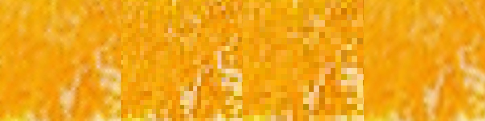
| the cut face | gradient | difference from ours, per pixel |
|---|---|---|
| O‑Voxel: polygon, field sampled at the fragment | 0.0073 | — |
| dense grid, same cell size | 0.0092 | 0.0253 |
| dense grid, equal memory (cells 1.33× wider) | 0.0084 | 0.0350 |
| the pipeline's slab | 0.0069 | 0.0122 |
The mosaic in the middle two panels is one colour per cell across a cross-section several pixels wide; the last panel keeps the texture but has been through a low-pass filter several cells deep.
The dual grid puts one vertex inside each boundary cell and training moves it, so the surface can sit anywhere. A cube occupancy can only put a face on a cell boundary. Same cells, same colours from the same field, same camera.
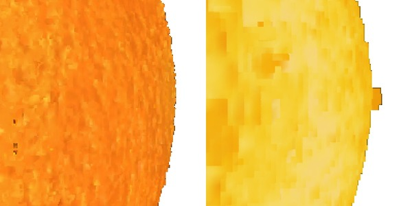
The left is a continuous rind with its pores; the right is an axis-aligned staircase that steps once per cell, with a stray cube hanging off the edge.
This is the one that does not go away when the grid is refined. A cube face is axis-aligned, so its normal is one of six vectors, and that is true whether the cells are coarse or 6.16 million of them. Lighting, shading and every gradient of the surface are computed from those normals.
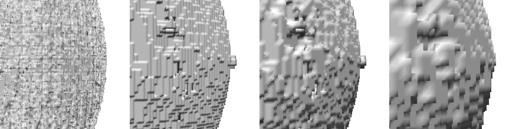
| surface | cells | faces | distinct normal directions |
|---|---|---|---|
| dual grid, fine cell | 900,556 | 4,339,728 | 3,424,207 |
| cubes, fine cell | 6,161,456 | 558,016 | 6 |
| cubes, coarse cell | 770,182 | 139,504 | 6 |
| cubes, twice the coarse cell | 100,600 | 34,740 | 6 |
Eight times the cells changes the size of the steps and nothing else. In the picture the three cube panels are flat facets at every resolution, while the dual grid shades as a curved surface and still shows the peel's own relief.
The expected demonstration was that an oblique cut — 30° or 45° to the axis — comes out with a smooth outline where a voxel slice staircases. Measured, it does not.
| tilt | outline ratio, ours | outline ratio, voxel slice | area they disagree about |
|---|---|---|---|
| 0° | 4.654 | 4.654 | 0.0% |
| 30° | 4.864 | 4.879 | 0.0% |
| 45° | 5.655 | 5.657 | 0.0% |
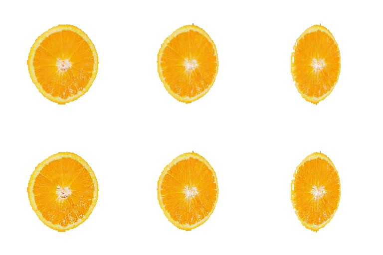
cut_polygons intersects the plane with each solid cube, so the outline of
the union is the occupancy boundary at cell resolution — exactly what a nearest-cell test
returns. The dual grid smooths the object's surface and has nothing to do with the outline of a cut.
What the polygon buys is inside that outline: it is rasterised and coloured from the field at each
fragment, so one cell's cross-section carries a gradient instead of a single tone. That is the first
comparison on this page, and it is worth 0.0350 per pixel against a dense grid at equal memory
— but it is not an anti-aliasing argument, and calling it one would not survive a reviewer
opening the file.
A tracer needs the hit point and the normal to build the reflected ray; a contact solver needs the hit point and the normal to build the contact frame. So one set of parallel rays is cast at the object and both representations answer. The voxel path marches the grid until a cell is solid and returns the face it crossed; the dual grid answers with the surface itself.
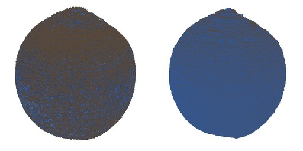
The right-hand ball is one flat blue. From any single direction a cube surface shows three of its six faces, so the tracer has three reflection directions for the whole object and the reflection has three tones. Counted over the 132,605 rays that hit both: 3 distinct normals against 132,000. This is what "the ray only ever meets the cube's bounding box" costs, and no amount of refinement changes the count.
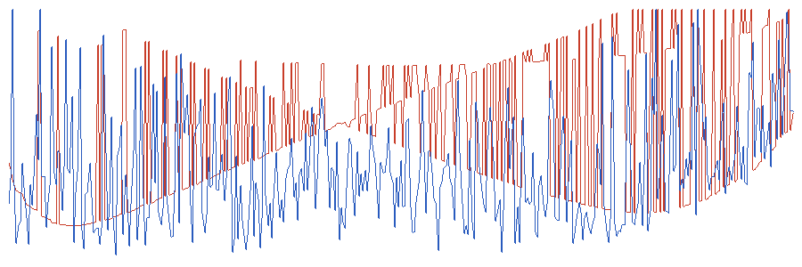
The red trace is a square wave: the collider hands the solver one of a few fixed directions and flips between them as the contact slides, which is where a jolt in a simulation comes from. Against the direction a ball's contact normal should have — from the centre to the contact — the cube collider is 49.0° off at the median and the dual grid 36.0°.